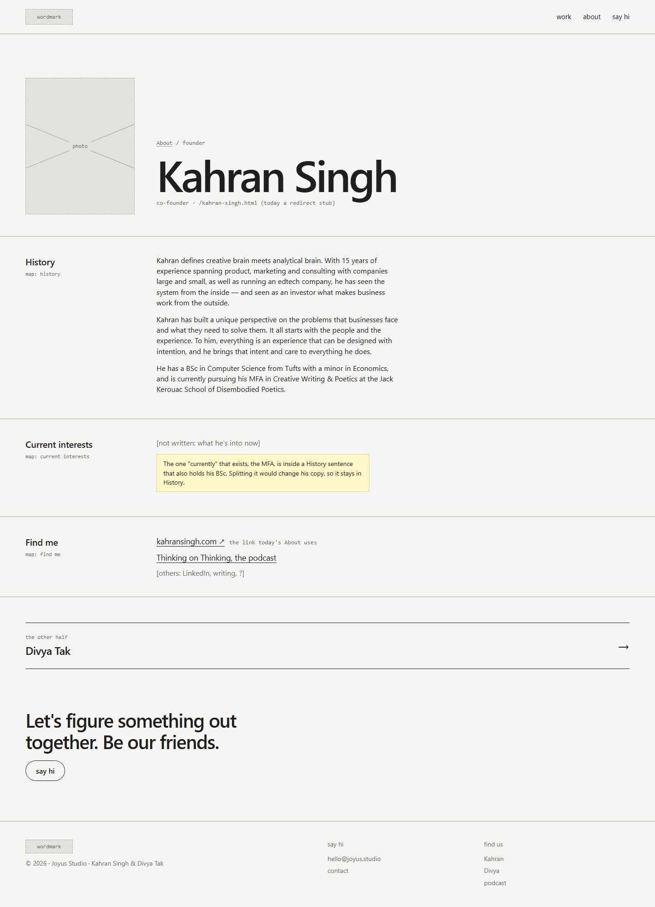
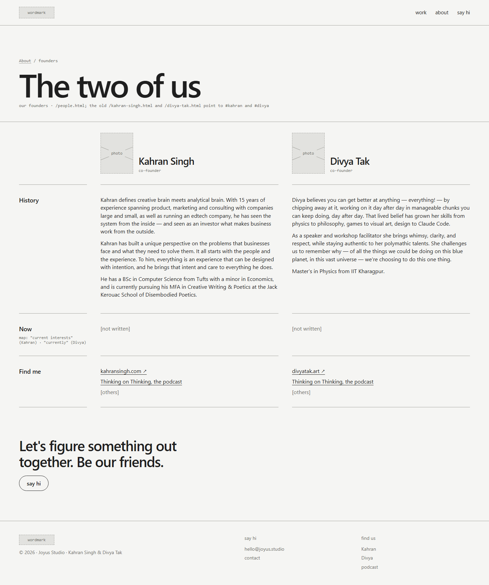

Study 09 · 1 October 2026
The person page
A page each, or both on one.


Superseded by Study 13: the founders sit in the one page's About.
Found on the way
- I split Kahran's first paragraph. Put back; the check now compares whole paragraphs.
- The old
/kahran-singh.htmland/divya-tak.htmlURLs already exist.
Test: check.cjs, every bio paragraph whole and identical to about.html.